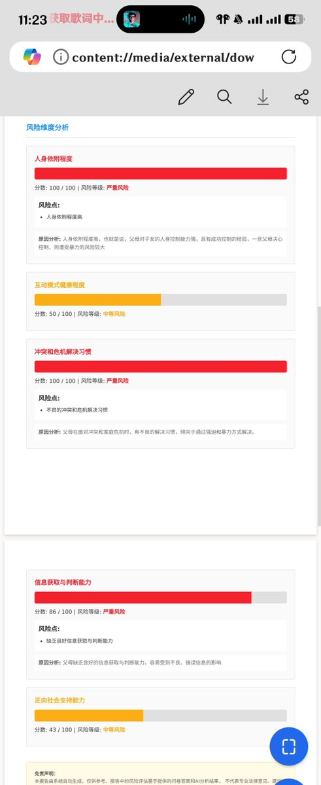

风🎐
@Starrynightwglf
@Nevernessian 啊翻通知发现漏回了🥲
那三个分数特别高的的没啥意外，我父母就是控制力强，喜欢强硬解决事情，网上刷到啥信啥😓，
互动模式的话嗯是处在有沟通但是很少的情况
就是最后一个正向社会支持能力没有看懂什么意思，这个分数是根据什么得出的呀

魏淑淑淑芬芬芬
@Nevernessian
@Starrynightwglf 感谢测试～感觉这个结果每个维度的得分和实际印象相符吗？